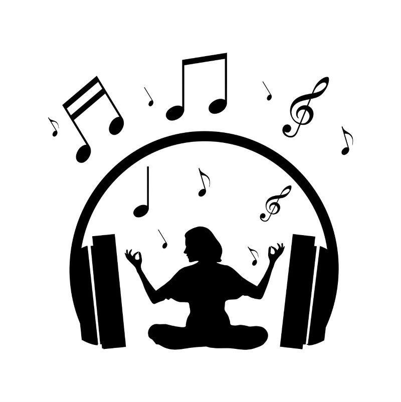
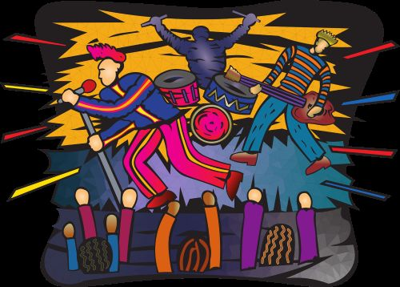

Music is one of the most universal forms of expression. It can calm the mind, energize the body, help with focus, or bring people together. Whether you are studying, relaxing, or celebrating, music adapts to the moment.
Soft, calming music can reduce stress and help you unwind. Many people use ambient or instrumental tracks to relax after a long day or to create a peaceful environment.

Music is also a powerful tool for creativity. Singing, playing instruments, or even humming along can boost your mood and help you express emotions that are hard to put into words.

Enter your name below and click the button to receive a custom message.